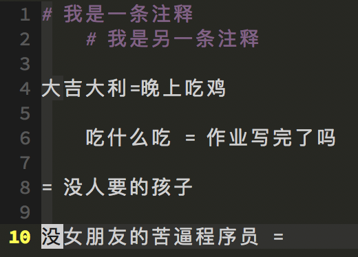

最近转到 mac 平台下了,以后打算使用 mac 作为主力系统. Linux 刚开始用的桌面是gnome, 感觉还 ok, 到后来转向 Ubuntu 的 Unity,因为这个桌面还是很华丽的, 好不容易把习惯从 gnome 转向了 unity,但是 2017 年居然被 Canonical Ltd 宣布抛弃了, 我当时就是这种心情. unity 这个桌面本身 bug 也是多多,尽管基本上各种问题也是能手动解决, 比如对显卡的支持不善导致经常循环登录,总是删了显卡再安装,然后问题莫名就好了, 以至于写了很多专治脚本,比如 fuckingloop.sh. 这都没关系,那既然 unity 不支持了, 继续宣布使用 gnome,那好,我就用 gnome 好了,然后我体验了一下,我的旧笔记本的配置是 这样的:8GB RAM + 1.9GHZ + 256GSSD. 按理来说应该不会体验太差吧,结果安了个 gnome 桌面,那卡顿的我没有脾气. 可能我 CPU 是瓶颈???
反正这么多年了,Linux没有一个好用的桌面,一会儿这个来个桌面,那个来个桌面, 到最后都不成气候. 以前刚用 linux 的时候,感觉鼓捣起来简直老爽了,配置这配置那的, 感觉自己特牛逼,然后花了特别多时间,也学到了不少东西,但是现在渐渐熟悉起来之后, 就不大想鼓捣了,因为就那些玩意儿. 我不记得有谁说过了关于在 Linux 下安装软件有这么几种体验: 刚开始的时候,刚从 windows 转过来,到处去找软件安装包, 希望像 windows 下面那样一路 next 下去,软件就安装好了. 然后玩着玩着,发现这种方式简直太低级了好吧,不行,我要找源码编译软件, 就这样又玩了一段时间. 再到后来,发现,诶,也就那样,还是找软件包安装了吧. 历史总是那么惊人的相似...
说了这么多,就是说,至少目前是这么打算,用 mac 作为主力系统, windows, linux 什么的, 虚拟机伺候. 说了一堆废话,今天要说些什么呢?
以前在 Linux 下动态调试 android 程序的组合套件是: Linux 主机 + Windows 虚拟机 (里面安装 IDA),然后通过 IDA 远程调试 android 程序. 其中涉及到各种协议转发, 但是为了环境一步到位,写了一些脚本,现在到 mac 下了, mac 上可以安装和谐版的 IDA 7.0 了, 开心,不用再弄个虚拟机调试 android 了. 但是还是需要环境配置, 修改 bash脚本时, 发现写的脚本封装性太不好了, 于是打算封装成函数, 今天的主角就是这个 bash函数, 我将从这个函数出发,讲述其涉及到的 bash 编程知识.
wget http://ftp.gnu.org/gnu/bash/bash-4.4.18.tar.gz tar -zxvf bash-4.4.18.tar.gz cd bash-4.4.18 ./configure make && make install sudo mv /bin/bash /bin/bash.bak sudo mv /bin/sh /bin/sh.bak sudo ln -s /usr/local/bin/bash /bin/bash sudo ln -s /usr/local/bin/bash /bin/sh
这个函数参考自这里, 但是上面链接哪里的代码很简陋,这里我我给完善了一下,代码如下
#! /bin/bash
readconfig() {
local fconfig="$1"
local __CONFIG="$2"
declare -A -g "$__CONFIG"
local KEY VALUE
while read; do
# Skip comment and empty lines
[[ $REPLY =~ [:blank:]*#.* ]] && continue
local IFS='='
read KEY VALUE <<< "$REPLY"
# Trim the string
KEY=$(echo $KEY | xargs)
VALUE=$(echo $VALUE | xargs)
# Either key or value is NULL, we skip the line
[[ -z "$KEY" ]] || [[ -z "$VALUE" ]] && continue
echo $KEY:${#KEY} $VALUE:${#VALUE}
# Assignment
eval "$__CONFIG[\"\$KEY\"]=\"\$VALUE\""
unset IFS
done < "$fconfig"
}
readconfig configfile CONFIG
for key in ${!CONFIG[@]}; do
echo -e "$key" "\t" ${CONFIG["$key"]}
done
说一下它的功能,读取一个配置文件,将配置文件中的键值对,读到一个字典中,方便后续使用. 配置文件的格式很简单,一个标准的行应该是下面这样子的.
KEY=VALUE
# 号为第一个字符的行或者空行将会被忽略掉,键值对残缺的行也会别忽略. 配置文件看起来像这样
 然后输出如下大吉大利:4 晚上吃鸡:4 吃什么吃:4 作业写完了吗:6 大吉大利 晚上吃鸡 吃什么吃 作业写完了吗
当你扫一遍这个函数,如果你轻轻松松就理解了,说明你的内功已远远在我之上, 从这篇文章里也学不到什么新东西,大佬受我一拜,您可以去忙自己的事情了.
阅读前先看一下自己用的是什么 shell 解释器,使用这个命令查看 /bin/ps -p $$, 确保是 bash 后,再在自己的终端里面运行下面的样例代码. 不过你编写 bash 脚本的话不 用担心,因为你有 shebang. 那么问题来了,什么是 shebang?
脚本中以 #! 号开头的行叫做 shebang, 发音/ ʃɪˈbaŋ/, 用于指定脚本的解释程序路径, 在 bash,perl,python 脚本中一般都有这一行.
bash 中定义变量就很简单,直接 var_name=var_value 就可以, 定义了一个变量为 var_name,值为 var_value, 等号两侧没有空格, 这一点很重要,这和很多编程语言中不同. 引用变量的值需要前缀以美元符号 $. 比如
count=123 echo $count apple=3 google=4 echo $apple $google
bash 中的变量是无类型的,什么意思呢? 上面的代码中,count的值是 123, 给我们的感觉就是整数,它也确实是整数,但是也是一个字符串, 可以对它执行算术操作,也可以执行字符串操作,比如如下代码
let count+=3
echo $count # 输出 126
echo ${count/26/hh} #输出 1hh
第一条命令是执行了算术运算,第二条命令是执行了一下 bash 中的字符串替换命令, 将 26 替换为 hh(但注意,不影响 count 的值,因为修改后没有赋值给 count). 所以,像上面那样声明的 bash 变量,要知道它们是无类型的.
bash 中除了无类型的变量,还有几种其他的特殊变量. 使用关键字 local 定义的局部变量,系统内置的环境变量,位置参数,有类型变量.
local 定义的变量主要是在代码块或者函数中用到. 那么 bash 中什么是代码块呢,就是用花括号括起来的一组代码, 实际上花括号定义了一个匿名函数,当不使用 local 关键字时, 在代码块中声明的变量是全局的.看下面的代码
a=123
{ a=321; }
echo $a # 输出 a 为 321
b=123
{ local b=321; }
echo $b # 输出 b 为 123
func () {
local a=3 b=4
echo $a $b
}
func # 输出 3 4
函数也是一个代码块. 通常地,在函数内部鼓励使用 local 关键字, 这样不影响外界.
bash 脚本可以接收参数,一个脚本接收到的参数叫做位置参数, 在 bash 中依次编号为 $0,$1,$2, ... , $9,${10},${11}, ... . $0 为脚本自己的名字, $1 及其后面依次为第 1,2,3 ... 个参数. 第 10 个及其以上的位置参数需要用大括号括起来. 所有位置参数保存在 $* 或者 $@ 中.,
我们使用变量时可以用单引号或者双引号括起来,比如 "$a" 和 '$a', 这两者之间什么重要区别呢? 双引号中的值将会被解释,而单引号中的将不会解释. 看下面的代码.
a=123 echo "$a" # 输出 123 echo '$a' # 输出 $a
bash 中内置了很多环境变量,现在列举一些比较重要的.
我们可以使用 declare 来声明一个变量的性质.几个用法如下
declare -i number
number=3 # 声明一个整数变量 number, 并设置其值为 3
declare -a Unix
声明一个数组
Unix=('Debian' 'Red hat' 'Red hat' 'Suse' 'Fedora')
当然,也可以一步到位:declare -a Unix=('Debian' 'Red hat' 'Red hat' 'Suse' 'Fedora')
declare -A animals
声明一个字典
animals=( ["moo"]="cow" ["woof"]="dog")
一步到位:declare -A animals=( ["moo"]="cow" ["woof"]="dog")
declare -x var3
脚本内变量 var3,脚本外环境可见.
declare -g modvar
强制变量 modvar 在全局范围内可以被创建或者修改,
即使 declare 是在一个函数中执行,照样生效.
更多请参考:https://www.gnu.org/software/bash/manual/html_node/Bash-Builtins.html
现在我们来看一下 bash 中的基本控制流.
一个常见的 if-else 语句如下两种形式
if cmd1
then
blabla;
elif cmd2
blabla;
else
blabla;
fi
|
if cmd1; then
blabla;
elif cmd2; then
blabla;
else
blabla;
fi
|
这里的测试条件 condX 有好几种
这里 if [ cond ] 和 if [[ cond ]] 之间的差别, 主要区别是 [] 是命令,而 [[ ]] 是关键字,我们多用 if [[ cond ]] 即可. 测试分为这么几种
-e 文件存在
-a 文件存在,这个选项的效果与-e相同. 但是它已经被"弃用"了, 并且不鼓励使用.
-f 表示这个文件是一个一般文件(并不是目录或者设备文件)
-s 文件大小不为零
-d 表示这是一个目录,也可以用于测试目录是否存在
-b 表示这是一个块设备(软盘、光驱等.)
-c 表示这是一个字符设备(键盘, modem, 声卡, 等等.)
-p 这个文件是一个管道
-h 这是一个符号链接
-L 这是一个符号链接
-S 表示这是一个socket
-t 文件(描述符)被关联到一个终端设备上.这个测试选项一般被用来检测脚本中的stdin([ -t 0 ]) 或者stdout([ -t 1 ])是否来自于一个终端.
-r 文件是否具有可读权限(指的是正在运行这个测试命令的用户是否具有读权限)
-w 文件是否具有可写权限(指的是正在运行这个测试命令的用户是否具有写权限)
-x 文件是否具有可执行权限(指的是正在运行这个测试命令的用户是否具有可执行权限)
-g set-group-id(sgid)标记被设置到文件或目录上.如果目录具有sgid标记的话, 那么在这个目录下所创建的文件将属于拥有这个目录的用户组,而不必是创建这个文件的用户组. 这个特性对于在一个工作组中共享目录非常有用.
-u set-user-id (suid)标记被设置到文件上.如果一个root用户所拥有的二进制可执行文件设置了set-user-id标记位的话,那么普通用户也会以root权限来运行这个文件.这对于需要访问系统硬件的执行程序非常有用.如果没有suid标志的话,这些二进制执行程序是不能够被非root用户调用的.对于设置了suid标志的文件,在它的权限列中将会以s表示.
-k 设置粘贴位.粘贴位设置在目录中,它将限制写权限,在它们的权限标记列中将会显示t.如果用户并不拥有这个设置了粘贴位的目录,但是他在这个目录下具有写权限,那么这个用户只能在这个目录下删除自己所拥有的文件.这将有效的防止用户在一个公共目录中不慎覆盖或者删除别人的文件,比如说/tmp目录.
-O 判断你是否是文件的拥有者
-G 文件的group-id是否与你的相同
-N 从文件上一次被读取到现在为止,文件是否被修改过
f1 -nt f2 文件f1比文件f2新
f1 -ot f2 文件f1比文件f2旧
f1 -ef f2 文件f1和文件f2是相同文件的硬链接
! 反转上边所有测试的结果(如果没给出条件,那么返回真).比如:
if [[ ! -d $DIR ]] # 注意if 与[[ 之间有空格, ! 和 -d 之间有空格,[[ cond ]] 与cond 之间有空格.
then
mdkir $DIR
fi
=或者== 测试是否相等 != 不等号 <,> 小于,大于,按照ASCII字符进行排序 -z 字符串长度为零
< 小于 (("$a" < "$b"))
<= 小于等于 (("$a" <= "$b"))
> 大于 (("$a" > "$b"))
>= 大于等于 (("$a" >= "$b"))
bash 支持三种模式匹配: glob 模式匹配,扩展 glob 模式匹配,正则匹配.
这种模式用的相当广泛,当我们在命令行输入 ls *.jpg 列出所有的 jpg 图片时用的就是 这种模式.其大致的用法如下
* 匹配任何字符串,任何长度
foo* 匹配任何以 foo 开头的字符串
*x* 匹配任何包含 "x" 的字符串,无论是在开头,中间还是末尾包含
*.tar.gz 匹配任何以 .tar.gz 结尾的字符串
*.[ch] 匹配任何以 .c 或者 .h 结尾的字符串
foo? 匹配 foot 或者 foo$ 但不匹配 fools, ? 只匹配单个字符
[abcd] 匹配 a,b,c 或者 d
[a-d] 等同于 [abcd],要匹配短横 "-" 时,把 "-" 放在开头如 [-abcd] 或者结尾
需要设置 globasciiranges(自 bash 4.3-alpha 引入)
[!abcd] 匹配任何不是 a,b,c,d 之外的任何字符
[[:space:]] 匹配任何空白字符,与其对立的是 [![:space:]]
[[:digit:]_.] 匹配任何数字,下划线(_)或者点(.)
启用扩展 glob 模式需要执行如下命令
shopt -s extglob
注意如果你要是在脚本中使用,你最好在 shebang 下紧挨着写这句命令,如下
#!/bin/bash shopt -s extglob
其额外支持的操作包括
?(pattern-list) 模式出现 0 次或者 1 次 *(pattern-list) 模式出现 0 次或者多次 +(pattern-list) 模式出现 1 次或者多次 @(pattern-list) 匹配模式中的一个 !(pattern-list) 匹配非模式之外的任何东西 注:pattern-list 中的多个模式使用竖线(|)来划分.
这个就强大了,看一些风骚的操作,又多了一项装逼的技能,哈,哈,哈哈... 来看几个例子.
# 删除所有非 jpg 的文件 rm !(*.jpg) # 删除所有非 jpg,gif,png 的文件 rm !(*.jpg|*.gif|*.png) # 将所有非 04 开头的 mp3 文件移到 /mnt 目录下面 cp !(04*).mp3 /mnt
从 bash 3.0 版本开始, bash 引入了正则匹配,符号是 ~=. bash 支持的的正则为 ERP(Extended Regular Expression), 有 ERP 就有 BRP(Basic Regular Expression).人生可真是艰难啊. 正则表达式本身就够高深了,又来个 ERP 和 BRP. 正则表达式的基本要素我就不说了,那又要说老多了,这里列出 ERP 和 BRP 的主要区别.
.
[ ]
[^ ]
^
$
\n # 不是换行符,表示捕获到的第 n 个匹配模式, n 的大小为 1 ~ 9
*
BRE: \( \) ERE: ( )
BRE: \+ ERE: +
BRE: \? ERE: ?
BRE: \| ERE: |
BRE: \{m,n\} ERE: {m,n}
BRE: \{m\} ERE: {m}
BRE: \{m,\} ERE: {m,}
BRE: \{,n\} ERE: {,n}
可以看到, ERP 是现在大多数编程语言中采用的正则表达式形式. POSIX 也定义了一些标准类,如下
| POSIX class | similar to | meaning |
|---|---|---|
| [:upper:] | [A-Z] | uppercase letters |
| [:lower:] | [a-z] | lowercase letters |
| [:alpha:] | [[:upper:][:lower:]] | upper- and lowercase letters |
| [:alnum:] | [[:alpha:][:digit:]] | digits, upper- and lowercase letters |
| [:digit:] | [0-9] | digits |
| [:xdigit:] | [0-9A-Fa-f] | hexadecimal digits |
| [:punct:] | [.,!?:…] | punctuation |
| [:blank:] | [ \t] | space and TAB characters only |
| [:space:] | [ \t\n\r\f\v] | blank (whitespace) characters |
| [:cntrl:] | control characters | |
| [:graph:] | [^ \t\n\r\f\v] | printed characters |
| [:print:] | [^\t\n\r\f\v] | printed characters and space |
来看 bash 中的循环语句
# for 单行
for arg in [list]; do cmd1; cmd2; ... cmdn; done
# for 多行
for arg in [list]
do
cmd...
done
# while 多行,单行类似 for
while cond
do
cmd ..
done
# until 多行,单行类似 for
until cond
do
cmd ...
done
# 循环控制
break 或 continue
# 其他
select,case 暂时从略
然后我们来看 bash 编程中的函数定义. bash 中函数的定义有如下几种方式
[function] function_name () {
command ...
}
|
[function] function_name ()
{
command ...
}
|
其中用中括号括起来的关键字 function 是可选的,一般我们为了省事,就不写了. 至于大括号可以选用两种缩进风格. 左侧的风格叫 K & R 风格,右侧的叫 Allman 格式.
无论函数有无参数,定义时括号里的参数列表都是空的.函数必须先定义然后才能调用(先声明是不可行的). 调用函数很简单,只需要 function_name 即可. 如果函数式有参数的,那么可以使用 function_name arg1 arg2 ... argn 来传递参数.
在函数内部 arg1, arg2 ... argn 依次对应 $1, $2, ... $n. $# 保存着函数参数的个数, 函数的所有参数保存在 $* 或者 $@ 中.函数的返回值, 只能是一个状态值, 0 表示函数执行成功, 而非 0 表示失败, 返回状态可以使用 return <status> 来完成. 那么一个很自然的问题就是, 我们如果想要返回一个非状态的值应该怎么办? 不用着急,本文会圆满解决这个问题的.
简单来说 Here Document 是一个由界定符号指定的文本块, 使用 I/O 重定向技术将文本块输入到其对应的命令或者程序中. 假如一个文件 afile 的内容如下
LINEA LINEB LINEC
那么执行 cat afile > afile.bak 和执行下面的命令等价.
cat > afile.bak <<EOF LINEA LINEB LINEC EOF
其中 EOF 是界定符号,可以是任意定义的字符串.
这个也很简单啦,就是展开一个变量的值,反馈到对应的命令或程序中.
str="你 好 帅 气 啊"
read -a goodman <<< "$str"
for ch in ${str[@]}; do echo $ch; done
# 输出如下
你
好
帅
气
啊
能认真看到这里的你,一定很了不起.
现在,我们可以轻松来解读这个脚本啦. readconfig 函数接受两个参数,第一个参数是配置文件的名称, 这里就是 configfile 了, 该文件放在和脚本同一目录下面. 第二个参数是我们希望函数在内部处理后,返回的参数.
local fconfig="$1" local __CONFIG="$2" declare -A -g "$__CONFIG" local KEY VALUE
进入函数, fconfig 设置文件名称, __CONFIG 设置为第二个参数,注意不要和传入的参 数名一样,我们需要强制设置这个参数为可修改的字典变量,因为我们在 while 循环中给该 变量添加了元素.然后是声明了键值对局部变量,在 while 循环中要用到.
现在来看 while 循环,其条件是 read 命令读取,当 read 把文件读完的时候, 就会返回一个false 的状态值, while 就自动结束了. 从哪里读呢?我们直接用文件重定向符号 < 来完成. 写法可以参见脚本.
[[ $REPLY =~ [:blank:]*#.* ]] && continue
然后就是用了一个条件评估表达式,每一次 read 读取都会设置 $REPLY 变量, 我们检测 $REPLY 变量是否匹配我们的模式,这个模式 [:blank:]*#.* 的意思是, 匹配的行以 0 个或者多个空白字符开始,然后是一个 # 号,然后是任意一个字符出现任意 多次.用来检测是不是注释行,如果匹配上,则跳过该行,继续下一句
local IFS='='
read KEY VALUE <<< "$REPLY"
# Trim the string
KEY=$(echo $KEY | xargs)
VALUE=$(echo $VALUE | xargs)
# Either key or value is NULL, we skip the line
[[ -z "$KEY" ]] || [[ -z "$VALUE" ]] && continue
echo $KEY:${#KEY} $VALUE:${#VALUE}
这个时候我们已经读到一行配置信息,配置信息是以 '=' 分割开来的, 所以我们设置 IFS 变量为 '='. 这样的话, read 读取改变量内容的时候将会自动分割, 比如说读入这一行 " 吃什么吃 = 作业写完了吗"时,相当于先从先反馈给 read 一个 " 吃什么吃 ",然后是" 作业写完了吗",并以此赋值给 KEY,VALUE 两个局部变量. 变量两侧的空格肯定不是我们需要的,所以我们需要去掉, 而 xargs 程序读入的参数会自动去掉参数两侧的空格,很实用,于是就用这个方法实现了去掉变量两侧的空格. 接着使用 -z 来测试 KEY 或者 VALUE 是否为空,只要有一个为空,那么就跳过这一残缺行.
eval "$__CONFIG[\"\$KEY\"]=\"\$VALUE\"" unset IFS
这一行使用 eval 给字典变量 __CONFIG 添加元素. 因为我们实际上要的是这样的形式 $__CONFIG["$KEY"]="$VALUE" 而 eval 的参数是一个字符串, 所以需要对字符转义.